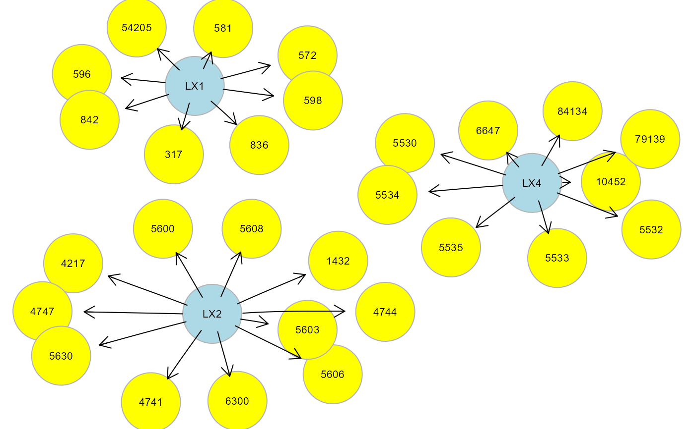

Topological graph clustering methods.
Arguments
- graph
An igraph object.
- type
Topological clustering methods. If
type = "tahc", network modules are generated using the tree agglomerative hierarchical clustering method (Yu et al., 2015). Other non-tree clustering methods fromigraphpackage include: "wtc" (default value; walktrap community structure with short random walks), "ebc" (edge betweeness clustering), "fgc" (fast greedy method), "lbc" (label propagation method), "lec" (leading eigenvector method), "loc" (multi-level optimization), "opc" (optimal community structure), "sgc" (spinglass statistical mechanics).- HM
Hidden model type. Enables the visualization of the hidden model, gHM. If set to "none" (default), no gHM igraph object is saved. For each defined hidden module: (i) if
HM = "LV", a latent variable (LV) will be defined as common unknown cause acting on cluster nodes; (ii) ifHM = "CV", cluster nodes will be considered as regressors of a latent composite variable (CV); (iii) ifHM = "UV", an unmeasured variable (UV) is defined, where source nodes of the module (i.e., in-degree = 0) act as common regressors influencing the other nodes via an unmeasured variable (see alsoclusterScore).- size
Minimum number of nodes per module. By default, a minimum number of 5 nodes is required.
- verbose
A logical value. If FALSE (default), the gHM igraph will not be plotted to screen, saving execution time (they will be returned in output anyway).
- ...
Currently ignored.
Value
If HM is not "none" a list of 2 objects is returned:
"gHM", subgraph containing hidden modules as an igraph object;
"membership", cluster membership vector for each node.
If HM is "none", only the cluster membership vector is returned.
References
Fortunato S, Hric D. Community detection in networks: A user guide (2016). Phys Rep; 659: 1-44. <https://dx.doi.org/10.1016/j.physrep.2016.09.002>
Yu M, Hillebrand A, Tewarie P, Meier J, van Dijk B, Van Mieghem P, Stam CJ (2015). Hierarchical clustering in minimum spanning trees. Chaos 25(2): 023107. <https://doi.org/10.1063/1.4908014>
Author
Mario Grassi mario.grassi@unipv.it
Examples
# Clustering ALS graph with WTC method and LV model
G <- properties(alsData$graph)[[1]]
#> Frequency distribution of graph components
#>
#> n.nodes n.graphs
#> 1 32 1
#>
#> Percent of vertices in the giant component: 100 %
#>
#> is.simple is.dag is.directed is.weighted
#> TRUE TRUE TRUE TRUE
#>
#> which.mutual.FALSE
#> 47
clv <- clusterGraph(graph = G, type = "wtc", HM = "LV")
#> modularity = 0.5588502
#>
#> Community sizes
#> 3 1 4 2
#> 4 8 9 11
#>
gplot(clv$gHM, l = "fdp")

table(clv$membership)
#>
#> 1 2 4
#> 8 11 9